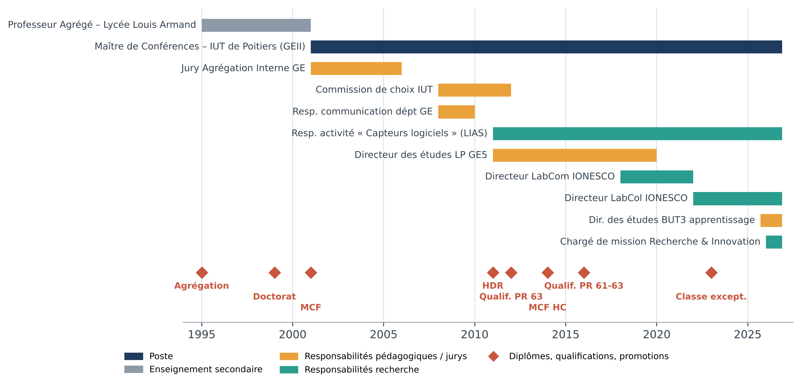
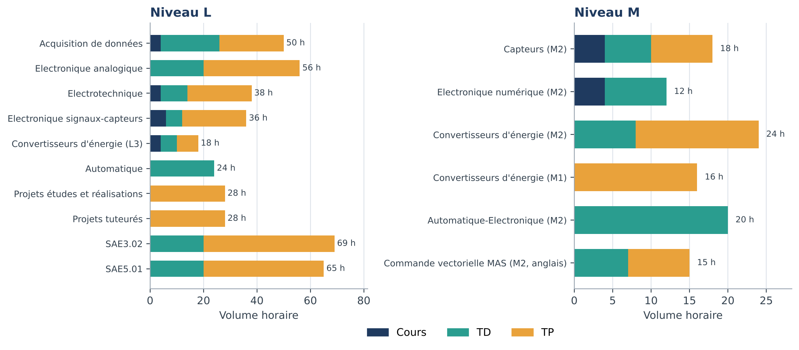
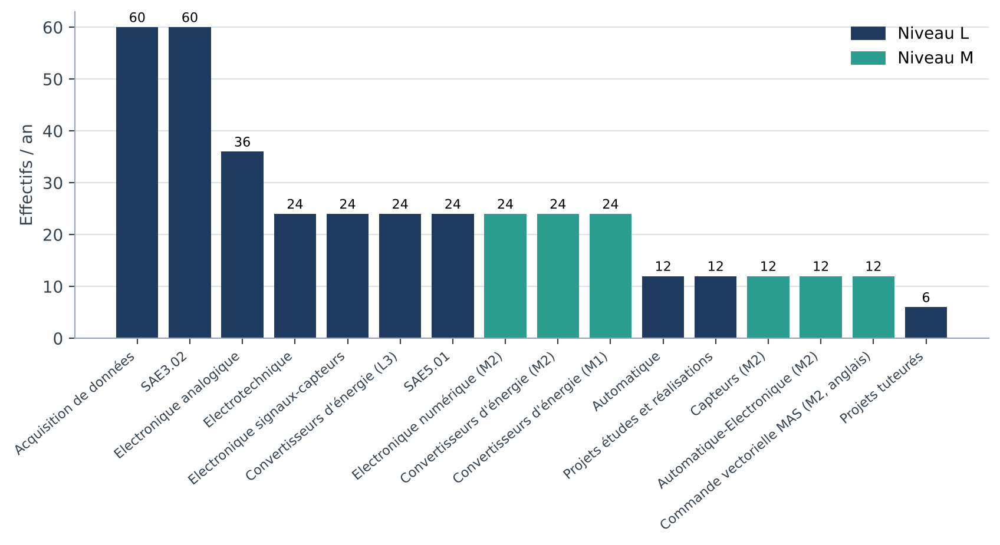
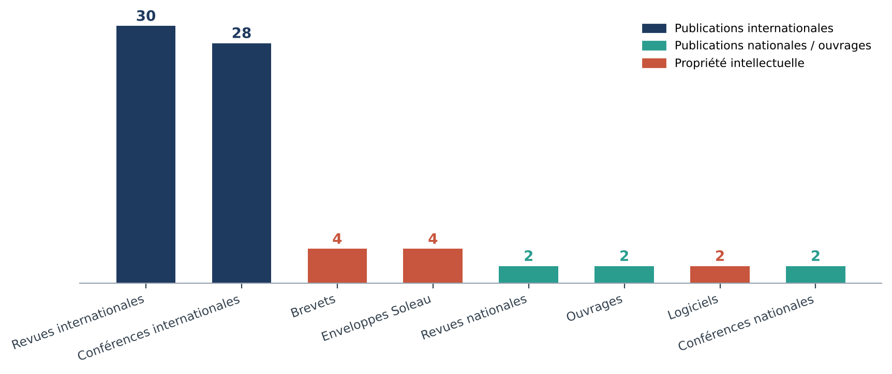
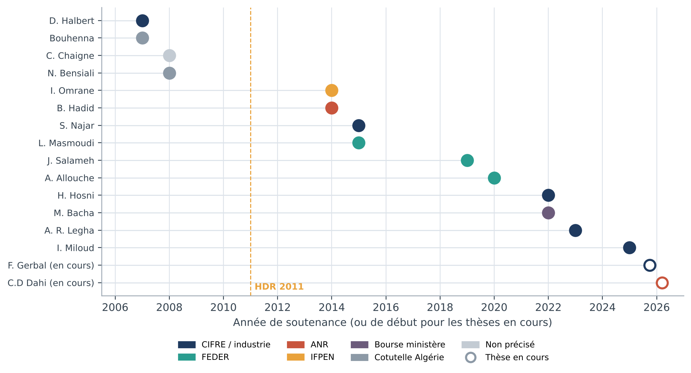
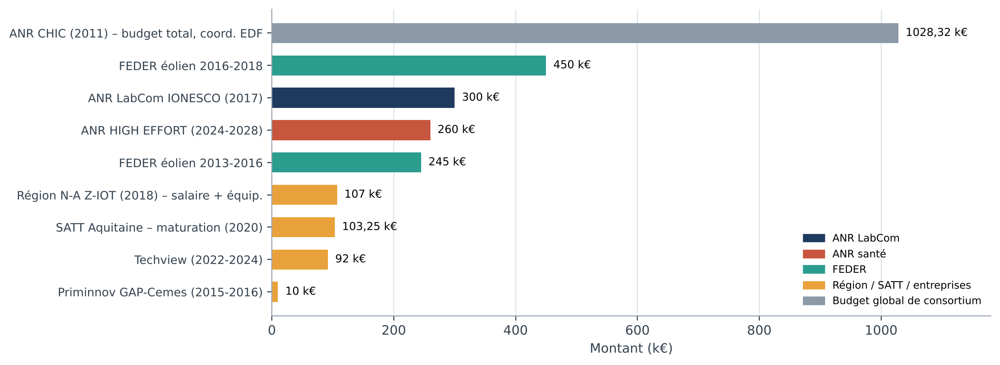
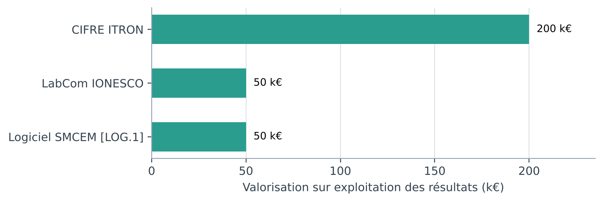

Erik ETIEN
Synthèse du parcours professionnel et contexte d’exercice
Ma carrière, en termes de diplômes et de positions, se résume par les étapes suivantes :

Diplômes, positions et distinctions
- 2023
Promotion Classe Exceptionnelle CNU 63.
- 2016
Qualification aux fonctions de Professeur des Université (sections 61 et 63)
- 09/2014
Promu Maître de Conférences Hors Classe – section 63.
- 2012
Qualification aux fonctions de Professeur des Université (section 63)
- 2011
Habilitation à Diriger les Recherches – Université de Poitiers – Titre : Développement de capteurs logiciels en Génie Electrique, approche par identification et observation de modèles physiques. Jury : M. Fadel (63), A. Glumineau (61), J.M. Rétif (63), E. Mendes (63), L. Loron (63) G.Champenois (63), T. Poinot (61).
- 2005-2024
Titulaire de la PEDR (2005), PES (2009), PEDR (2019), RIPEC (2024, 2027).
- Depuis
09/2001Maître de Conférences (IUT de Poitiers-Département Génie Electrique et Informatique Industrielle) - section 63 - Recherche effectuée au Laboratoire d’Informatique et d’Automatique des Systèmes (LIAS) de l’École Nationale Supérieure d’Ingénieurs de Poitiers (ENSIP – ISAE ENSMA).
- 1999
Doctorat de l’Université de Poitiers (Spécialité Automatique) : Caractérisation des Systèmes à Représentation Continue par les Moments Fréquentiels : Application à l’Identification et à la Réduction de Modèle. Mention très honorable avec félicitations du Jury. Jury : M Monsion, J Ragot, T Morin, J.C Trigeassou, G. Champenois, N. Maamri.
- 1995
Agrégation de génie électrique, ancien élève de L’ENS Cachan.
Durant l’ensemble de ma carrière, j’ai occupé plusieurs responsabilités en liens avec mes activités pédagogiques et mes activités de recherche.
Responsabilités pédagogiques
Les responsabilités pédagogiques ont été exercées pour certaines au niveau national et pour d’autres au niveau local.
- Sept. 2025
Directeur des études du parcours BUT3 par apprentissage.
- 2011-2020
Directeur des études de la Licence Professionnelle Gestion de l’Energie Electrique et Eco-Efficacité Energétique (GE5) de l’IUT de Poitiers.
- 2008-2012
Membre de la commission de choix de l’IUT de Poitiers.
- 2008-2010
Responsable de la communication du département Génie Electrique de l’IUT de Poitiers.
- 2001–2006
Membre Jury Agrégation Interne Génie Electrique.
Responsabilités en lien avec la recherche
Les responsabilités en lien avec la recherche (hors encadrements de thèses et participations à des jurys de thèses) concernent la direction d’un laboratoire collaboratif, la responsabilité d’une thématique de recherche au sein du LIAS et la responsabilité de plusieurs projets.
- Depuis 2026
Chargé de mission RECHERCHE et INNOVATION pour l’IUT de Poitiers.
- 2024
Projet ANR High effort, Mesure non-invasive des efforts inspiratoires dans l'insuffisance respiratoire aiguë hypoxémique | ANR, en collaboration avec le CHU de Poitiers. Responsable scientifique du Workpackage 1.
- Depuis
05/2022Directeur du Laboratoire Collaboratif IONESCO (Université de Poitiers et société Chauvin Arnoux). Attestation 1 en annexe.
- 2017
Coordinateur et lauréat de l’appel à projet ANR Labcom 2017. LabCom IONESCO. Budget 300kEuros/3ans. (http://www.agence-nationale-recherche.fr/Projet-ANR-17-LCV2-0004). Dépôt de dossier : Septembre 2017.
- 2016-2018
Responsable scientifique, pour le site de Poitiers, du projet FEDER avec laboratoire LASIE La Rochelle. Optimisation de la durée de vie des éoliennes et réduction des impacts environnementaux : approches par maintenance conditionnelle et contrôle actif. Financement 450kEuros. (http://electra.univ-lr.fr), attestation 2 en annexe.
- 2013-2015
Responsable scientifique, pour le site de Poitiers, du projet FEDER avec laboratoire LASIE La Rochelle. Maintenance prédictive des éoliennes et maîtrise des impacts environnementaux. Financement 245kEuros. Attestation 2 en annexe.
- 2012-2015
Responsable scientifique du contrat de collaboration CIFRE ITRON.
- Depuis 2011
Responsable au sein du LIAS de l’activité Capteurs Logiciels.
- 2011
Participation au Projet ANR CHIC, CHaînes de mesures Innovantes à bas Coût pour maîtriser et pérenniser l’efficacité énergétique dans l’industrie. Coordinateur EDF. (https://anr.fr/Projet-ANR-10-EESI-0002).
- 2004-2007
Responsable scientifique du contrat de collaboration CIFRE CHAUVIN ARNOUX.
Liens divers
- https://www.lias-lab.fr/fr/members/eriketien/
- https://www.lias-lab.fr/~eriketien/
- https://www.linkedin.com/in/erik-etien-a9281030/
Les éléments indiqués ci-dessus précisent de manière synthétique le déroulement de ma carrière. Il ne s’agit que des éléments significatifs auxquels s’ajoutent des apports à la fois en enseignement et en recherche. Mes activités d’enseignement sont variées et le paragraphe Activité pédagogique présente en détail mes activités pédagogiques. Mes activités de recherche, concernent essentiellement la complémentarité entre la recherche fondamentale et la recherche appliquée à des fins de transferts technologiques. Le transfert des connaissances s’est effectué de différentes manières : encadrement de thèses CIFRE et dépôts de brevets pour un transfert vers l’industrie ainsi que l’encadrement de thèses institutionnelles et la publication dans des revues et des colloques spécialisés pour la diffusion de mes travaux de recherche fondamentale. Le paragraphe Activité scientifique présente en détail mes activités de recherche.
Investissement pédagogique
1. Présentation synthétique de l’activité d’enseignement
Principaux enseignements en mettant l'accent sur les thématiques enseignées, les pratiques pédagogiques, les activités particulières : création d'un enseignement, transformation des enseignements.
Mon activité d’enseignement se décompose en deux périodes, la première de septembre 1995 à septembre 2001 pendant laquelle j’occupais un poste de Professeur Agrégé au Lycée Louis Armand de Poitiers en terminale STI, et la seconde période à partir de septembre 2001 durant laquelle j’occupe un poste de Maître de Conférences à l’IUT de Poitiers au département « Génie Electrique et Informatique Industrielle ».
Durant cette même période, j’ai enseigné l’automatique et l’électronique en préparation à l’Agrégation de Génie Electrique de l’Université de Poitiers pour un volume d’environ 20h TD.
Depuis 2001, j’occupe la fonction de Maître de Conférences (section 63) au département "Génie Electrique et Informatique Industrielle" de l’IUT de Poitiers. Mes enseignements, selon les années, concernent les disciplines suivantes : l’électronique analogique et numérique, acquisition de données, l’électrotechnique et l’électronique de puissance, informatique. L’ensemble de mes enseignements se répartissent sur les niveaux L1 et L2 (DUT en formation initiale et en formation par apprentissage) et L3 (Licence Professionnelle en formation initiale et formation par apprentissage). Pour les différents enseignements j’ai eu la charge des cours, des travaux dirigés et des travaux pratiques, projets et projets tuteurés.
J’enseigne par ailleurs dans deux formations d’ingénieurs (ENSIP et CNAM ITII) aux niveaux L3, M1 et M2.
Création d’enseignements
- 2025
BUT2 : création du SAE4.EME.02 - Vérification et maintenance d’un système de supervision pour transformateurs de distribution HTA/BT.
- 2023
BUT3 : création du SAE5.EME.01 – Installation photovoltaïques – TP et ressources.
- 2021
BUT2 : création du SAE3.EME.02 – Maintenance des machines électriques par analyse vibratoires – TP et ressources.
https://www.youtube.com/@eriketien-fondamentaux-gen3108/playlists
- 2018
DUT2 - Création du module Projet tuteuré : Estimation de la puissance électrique consommée par un moteur asynchrone à l’aide d’un capteur vibratoire
- 2017
DUT2 - Création du module ER3 - Réalisation d’une carte d’acquisition intégrant un Raspberry Pi.
- 2015-2016
DUT2/LPGE5 - Création du module MCTID – Programmation sous VBA Excel – Projet réalisation d’un simulateur de Wattmètre numérique sous Excel 2003.
- 2007-2008
LPGE5 – Création des modules (supports cours/TD/TP) : Electronique signaux capteurs, audit énergétique, gestion de l’énergie et ingénierie des systèmes.
- 2001
DUT2 : refonte du module Se3/OL3 (actuel Elen3)
Cours/TD – Créations de supports de cours/TD et de maquettes de travaux pratiques : échantillonnage, conversions A/N et N/A, filtrage numérique.
Transformation des enseignements
- 2019-2020
Pendant la crise COVID, l’ensemble de mes enseignements ont été réalisé à distance sur une période d’un an. A cette occasion, j’ai réalisé des vidéos de cours et de correction de TD toujours en ligne sur l’ENT de l’Université et YouTube.
Innovation pédagogique
- 2018
J’ai mis en place des modules d’initiation à la R&D et à l’innovation industrielle. Développés sous formes de projets et projets tuteurés, ces modules sont construits autour des projets de recherche menés en collaboration avec les partenaires industriels du LIAS (Chauvin Arnoux dans le cadre du LabCol, ITRON). Les contenus sont adaptés au niveau d’enseignement visé et concerne les problématiques de management de l’énergie et diagnostic mécanique à partir de mesures vibratoires. Ils permettent d’exploiter les connaissances acquises en traitement du signal (électrotechnique et analyse spectrale en particulier) et d’offrir une initiation à la programmation sous Matlab. Ces modules ont été proposés aux étudiants de LPGE5 et étendus en BUT2 dans le cadre de la SAE 3.EME.02.
Faire et ajouter la vidéo.
2. Présentation des enseignements
Faisant apparaitre la catégorie de diplôme (national, universitaire) le niveau (LMD), le type de formation (formation initiale / continue, professionnelle, présentielle / à distance), la nature (cours magistraux, TP, TD, encadrement de travaux de fin d'étude et de stages), les effectifs, le volume horaire (ce descriptif sera complété sous la forme d'un tableau détaillé en annexe - Tableau de présentation en annexe 1).
Les tableaux ci-dessous résument mes activités d’enseignement pour la période 1991 – 2022 : tableau 1 pour le niveau L, tableau 2 pour le niveau M et le tableau 3 pour l’enseignement effectué à l’étranger. Les effectifs sont indiqués approximativement, ils évoluent selon les années. Les tableaux font apparaitre les sigles FI et FA pour désigner respectivement Formation Initiale et Formation par Apprentissage.


| Disciplines | L/M/D | FI/FA | Cours | TD | TP | Effectifs/an |
|---|---|---|---|---|---|---|
| Acquisition de données | L2 | FI et FA | 4 | 22 | 24 | 60 |
| Electronique analogique | L1 | FI | 20 | 36 | 36 | |
| Electrotechnique | L2 | FA | 4 | 10 | 24 | 24 |
| Electronique signaux-capteurs | L3 | FI et FA | 6 | 6 | 24 | 24 |
| Convertisseurs d’énergie | L3 | FI et FA | 4 | 6 | 8 | 24 |
| Automatique | L3 | FI | 24 | 12 | ||
| Projets études et réalisations | L2 | FI et FA | 28 | 12 | ||
| Projets tuteurés | L2 | FI et FA | 28 | 6 | ||
| Situation d’Apprentissage et d’Evaluation (SAE3.02) | L2 | FI et FA | 20 | 49 | 60 | |
| Situation d’Apprentissage et d’Evaluation (SAE5.01) | L3 | FI et FA | 20 | 45 | 24 |
Tableau 1 : Enseignement niveau L
| Disciplines | L/M/D | FI/FA | Cours | TD | TP | Effectifs/an |
|---|---|---|---|---|---|---|
| Capteurs | M2 | FA | 4 | 6 | 8 | 12 |
| Electronique numérique : échantillonnage, conversion analogique numérique, filtrage numérique | M2 | FI | 4 | 8 | 24 | |
| Convertisseurs d’énergie | M2 | FA | 8 | 16 | 24 | |
| Convertisseurs d’énergie | M1 | FI | 16 | 24 | ||
| Automatique-Electronique | M2 | FI | 20 | 12 |
Tableau 2 : Enseignements niveau M
| Disciplines (enseignées en anglais) | L/M/D | FI/FA | Cours | TD | TP | Effectifs/an |
|---|---|---|---|---|---|---|
| Electrotechnique : Commande vectorielle de la machine asynchrone | M2 | FI | 7 | 8 | 12 |
Tableau 3 : Enseignements en anglais
3. Responsabilités pédagogiques
En particulier direction, animation, montage de formations, notamment à l'international, fabrication et utilisation de ressources pédagogiques, soutien à l'insertion professionnelle, soutien à l'entrepreneuriat, etc.
- Sept. 2025
Responsable du parcours BUT3 par apprentissage.
- 2011-2019
Responsable de la Licence professionnelle « Gestion de l’Energie Electrique et Eco-Efficacité Energétique (GE5) » de l’IUT de Poitiers. Les effectifs moyens étaient de 24 à 36 étudiants (50 % d’apprentis en moyenne). Les tâches inhérentes à cette fonction ont été multiples :
- Procédure de recrutement.
- Organisation pédagogique, évolution en fonction des attentes industrielles.
- Gestion des emplois du temps,
- Organisation des interventions industrielles (>30%),
- Visites d’entreprises,
- Gestion des stages (contacts industriels, conventions)
- Organisation des jurys de fin d’année.
Diffusion, rayonnement, activités internationales
- 2022
Création d’une chaîne YouTube à visée pédagogique pour la promotion des activités au sein du département GEII. L’objectif est d’une part de mettre à disposition des étudiants de GEII des ressources (électronique, traitement du signal, électrotechnique) en complément de la plateforme UPdago de l’Université de Poitiers. D’autre part d’illustrer les activités crées autour de nos plateformes expérimentales à l’intention de l’ensemble des enseignants des départements de GEII et de mettre à disposition les données disponibles (mesures) ainsi que les programmes de traitement réalisés (Matlab, Octave, VBA Excel). Cette chaine YouTube est en cours de construction.
- 2013-2018
Formateur au niveau national pour la société Chauvin Arnoux, groupe de 20 personnes/an.
- Thermographie infrarouge.
- Comprendre et vaincre les harmoniques.
- Installations électriques et qualité de l’énergie (étude de cas).
- Nécessité, méthodes et mise en œuvre des mesures sur les installations électriques, selon la NFC 15-100.
- 2010
Ouvrage : Systèmes d’acquisition de données – TECHNOSUP Ellipse – 2010
https://www.eyrolles.com/Sciences/Livre/mesure-systemes-d-acquisition-de-donnees-9782729861025/
- 2005
Ouvrage : Commande vectorielle sans capteur des machines asynchrones – Hermes
- 2001–2006
Membre Jury Agrégation Interne Génie Electrique. Auteur du sujet d’Automatique pour la cession 2001.
Activité scientifique
1. Présentation synthétique des thématiques de recherche
Grands axes de recherches et apport dans le ou les domaines concernés.
DEVELOPPEMENT DE CAPTEURS LOGICIELS
Mes activités de recherche sont menées au Laboratoire d’Informatique et Automatique des Systèmes (LIAS) de Poitiers. Mon domaine d’activité est le développement de capteurs logiciel dans les domaines industriels et médicaux. D’un point de vue théorique, ce développement s’appuie sur les outils de l’automatique basés sur la modélisation physique des systèmes (identification et observation). Une part importante est consacrée à la recherche en lien avec le monde industriel et notamment les aspects liés au réseau électrique, aux machines électriques et aux capteurs logiciels. L’ensemble de mes travaux a été valorisé soit sous la forme de publications dans les revues et congrès spécialisés soit sous la forme de brevets et de rapports de contrats industriels.
Réseau électrique, machines électriques, maintenance prédictive, désagrégation de charges (NILM)
Pompage, compression, ventilation… mesure de débit d’air par analyse vibratoire
Réanimation : estimation de grandeurs respiratoires par calcul
Capteurs logiciels en Génie Electrique
Après la soutenance de ma thèse en identification au LIAS (nommé LAII à l’époque) en 1999, j’ai poursuivi mon activité de recherche en parallèle de mon poste d’agrégé dans le secondaire. Je travaillais à cette époque dans le domaine de la commande vectorielle sans capteur des machines asynchrones. Après mon recrutement à l’IUT de Poitiers (2001), j’ai développé la thématique relative à la commande sans capteur des machines asynchrones en co-encadrant 3 thèses [TH_S.9], [TH_S.11], [TH_S.12]. En parallèle, j’ai entamé mes premiers travaux de collaboration industrielle avec la Société CHAUVIN ARNOUX [TH_S.10]. Ces travaux (commande sans capteur et mesure indirecte d’impédance de terre) ont été à la base de mon projet de recherche présenté pour mon habilitation en 2011. J’ai à ce moment pris en charge l’activité « capteurs logiciel » au sein du LIAS. J’ai ensuite poursuivi le développement de ce domaine spécifique en co-encadrant 3 thèses dans ce domaine [TH_S.5], [TH_S.7], [TH_S.8] financées par des collaboration industrielles ([TH_S.5], [TH_S.8]). Durant cette période, j’ai développé une branche spécialisée dans l’analyse des signaux électriques pour les applications de maintenance prédictives des machines électriques. J’ai financé cette partie de mes activités en obtenant deux projets FEDER consécutifs en collaboration avec l’université de La Rochelle (budget total 695 kEuros). Ces travaux portaient plus spécifiquement sur la maintenance dans le domaine de l’éolien avec un focus sur la spécificité de la vitesse variable inhérente à ces systèmes de production d’énergie. Dans ce cadre j’ai co-encadré 3 thèses [TH_S.3], [TH_S.4], [TH_S.6].
L’année 2017 marque un tournant dans ma carrière. L’apparition des projets ANR LabCom m’est apparu comme une réelle opportunité de structurer mon activité de recherche autour d’un laboratoire commun. La société CHAUVIN ARNOUX était le partenaire idéal dans la mesure où nous avions déjà mené des travaux de recherche ensemble (contrat CIFRE et consultances) et que j’étais leur formateur au niveau national. Nous avons été lauréats de la cession 2017 et le LabCom IONESCO que je dirige a été créé en 2018. Ce laboratoire mixte (Université/Industrie) travaille au développement de nouveaux produits dans le domaine de l’analyse des moteurs électriques (suivi énergétique et maintenance) et dans le management de l’énergie des réseaux électrique par désagrégation de charges (NILM). Cette collaboration a parfaitement fonctionné en termes de valorisation, de dépôt de brevet [BEV-2], de logiciel [SOL.1 à 4] et de recrutement (JACK Salameh recruté comme ingénieur de recherche chez C.A et INES Miloud recruté en thèse sur fonds propres C.A, [TH_C.1]. Fort de ce succès et à la fin du financement ANR en 2022, l’Université de Poitiers a décidé de créer le Laboratoire Collaboratif IONESCO dont je suis actuellement le directeur (ANNEXE 1). Les recherches engagées se poursuivent et deux autres axes de développement ont été ajoutés à sa feuille de route : intégration dans un analyseur de réseau électrique de l’analyse de moteurs asynchrones en régime dynamique et diagnostic vibratoire des transformateurs HTA/BT.
Durant cette période l’activité « capteurs logiciels » a par ailleurs continué de générer des activités de collaboration avec d’autres partenaires industriels hors du cadre du LabCol :
- Maintenance prédictive pour des procédés de ventilation industrielle (Société GIRARDEAU – [TH_S.2]).
- Maintenance prédictive appliquée au ferroviaire (SOCIETE ALSOM – [TH_C.2])
- Mesure indirecte de débit d’air par analyse vibratoire (SATT, [BEV-1]).
Mes travaux correspondent donc à deux activités complémentaires, en recherche fondamentale et en recherche appliquée.
Recherche fondamentale
La partie fondamentale de mes recherches est centrée sur l’exploitation des outils de l’automatique dans les domaines de la gestion de l’énergie et de la surveillance des entraînements électromécaniques. L’approche par observateurs a été particulièrement développée faisant suite à la spécificité du LIAS spécialisé dans les modèles physiques. Le début de ma carrière a été consacré à la problématique de l’estimation à basse vitesse pour la commande sans capteur. Une approche originale, basée sur des techniques de linéarisation a été développée dans [TH_S.9], [TH_S.11], [TH_S.12] a donné lieu à plusieurs publications. Les travaux qui ont suivi et qui concernent le diagnostic des machines ont emprunté le même chemin en privilégiant l’approche modèle [TH_S.6], [TH_S.8] et en proposant des synthèses d’observateurs originales. Plus récemment, j’ai décidé d’aborder le problème du diagnostic à vitesse variable en privilégiant les techniques d’Order Tracking par rééchantillonnage angulaire en exploitant l’approche modèle par rapport aux techniques issues du traitement du signal [TH_S.2], [TH_S.3], [TH_S.4]. Cette stratégie se rapproche des problématiques d’estimation de vitesse sans capteurs tout en faisant apparaître de nouveaux verrous scientifiques. En particulier l’obtention des paramètres du modèle par une procédure simplifiée (sans essai spécifique), le lien entre la précision d’estimation de la vitesse de rotation et la qualité de l’échantillonnage angulaire, le choix de la technique d’observation, la simplicité de réglage restent des points à développer en particulier dans l’objectif d’un transfert vers l’industrie [TH_C.1].
Un autre verrou est de dépasser le simple rééchantillonnage des signaux pour aller vers une réelle modélisation angulaire des systèmes, idéalement indépendante du temps. Cet axe de recherche abordé dans la thèse [TH_C.2] est très récent et en développement actuellement au sein de IONESCO. C’est un sujet conceptuellement difficile qui nécessite de repenser la modélisation classique des machines. C’est à mon sens, un sujet porteur du point de vue fondamental et assez peu développé internationalement.
Recherche appliquée
La partie recherche appliquée en lien avec l’industrie est directement alimentée par mes travaux académiques. Pour les collaborations liées à la maintenance prédictive et au diagnostic des machines, l’approche modèle physique est privilégiée ([TH_S.2], [TH_C.1], [TH_C.2]). L’accent est mis ici sur la problématique d’estimation des paramètres du modèle. En effet, dans un contexte industriel, une procédure d’identification classique (signaux d’excitation type SBPA, algorithme d’identification) n’est pas envisageable dans la majorité des cas. J’ai donc développé, avec mon équipe, une stratégie liant l’estimation d’un modèle dynamique à partir d’un nombre réduit d’information (plaque signalétique, données constructeur) associée à une base de données de 40000 moteurs développée au LIAS. Le développement de cette base a donné lieu au dépôt de deux logiciels [LOG.2]. Il nous est possible actuellement de déduire d’une simple plaque signalétique le modèle de Park d’une machine asynchrone quelconque entre 750W et 750kW. Cette stratégie est systématiquement employée dans les travaux collaboratifs de ce domaine et en cours d’amélioration dans [TH_C.1]. Un autre axe de recherche appliquée important est la désagrégation de charge (NILM) qui est un des thèmes principaux de IONESCO. Là aussi, l’approche physique a été privilégiée et a fait l’objet d’un dépôt de brevet avec la société C.A [BEV-1].
Cette stratégie visant à rationnaliser ou automatiser les techniques transférables (observation, estimation) est primordiale pour le développement de collaborations efficientes. Elle a été nourrie par le fait que nous nous adressons volontairement aux entreprises de type PME et ETI. Les collaborations avec cette catégorie d’entreprises sont spécifiques dans la mesure où la culture de R&D est soit peu développée, soit déphasée temporellement par rapport aux travaux académiques (une innovation pour une PME peut être un sujet clos pour le laboratoire). Le discours et les outils théoriques doivent être adaptés pour tenir compte du niveau d’acceptabilité du partenaire.
La connexion entre mes activités académiques et appliquées est totale, ce qui ne va pas de soi dans la carrière d’un enseignant chercheur. C’est donc un certain privilège que j’ai en partie cultivé en rationalisant les choix des collaborations quitte à refuser quelquefois des sollicitations. C’est malgré tout un véritable atout pour mon équipe d’une part et pour nos partenaires qui bénéficient de nos dernières avancées dans des délais courts.
Capteurs logiciels en utilités industrielles
Le développement de capteurs logiciels dans le cadre des utilités industrielles (pompage, compression, ventilation...) a débuté par la responsabilité d’un workpackage dans le programme ANR CHIC dont le LIAS (LAII à l’époque) était partenaire (https://anr.fr/Projet-ANR-10-EESI-0002), [TH_S.8], [CI-8], [CI-12].
En 2019 j’ai observé, par hasard, expérimentalement qu’un capteur piézo-électrique placé dans une conduite parcourue par de l’air en mouvement vibrait à une fréquence proportionnelle au débit. Cette observation a été le point de départ d’une collaboration avec le LASIE de l’Université de La Rochelle afin de réaliser des expérimentations complémentaires. En 2020, un projet de maturation a été financé par la SATT Aquitaine pour un montant de 103250 euros sur 12 mois (lien SATT). Il s’en est suivi un dépôt de brevet [BEV-2] en 2022. L’extension du principe breveté à la mesure en 3 dimensions a fait l’objet d’un contrat de maturation avec la société Sauermann en 2022. Les travaux de collaborations sont toujours en cours et la Société Sauermann a acquis une licence d’exploitation du [BEV-2].
Licence d’exploitation du [BEV-2] acquise par Sauermann
- 2022
Dépôt de brevet [BEV-2] · contrat de maturation Sauermann (mesure 3D)
- 2020
Maturation SATT Aquitaine – 103250 euros sur 12 mois
- 2019
Observation expérimentale : vibration d’un capteur piézo-électrique proportionnelle au débit
Capteurs logiciels en médecine
En 2021-2022, j’ai eu l’opportunité d’ouvrir une nouvelle branche applicative des capteurs logiciel dans le domaine de la médecine. Ce travail concerne la réanimation et plus précisément l’estimation de grandeurs respiratoires par calcul. L’objectif est, à partir de ces signaux reconstruits, de pouvoir juger de l’efficacité d’un traitement et éviter l’intubation des patients. Ces premiers travaux ont permis de déposer et d’être lauréat avec le projet ANR HIGH-EFFORT en 2023 en collaboration avec le CHU de Poitiers (accepté en 2024). Ce projet, piloté par le Professeur Rémi Coudroy (CHU), se décompose en deux WorkPackages (WP). Le WP1, dont je suis responsable concerne l’estimation de l’effort respiratoire à partir de la mesure œsophagienne. Ces travaux ont mené au dépôt du brevet [BEV-1]. Le WP2 concerne l’estimation de l’effort respiratoire en oxygénation haut débit (HFNO) [RI-1] et a fait l’objet d’un recrutement en thèse en 2026, [TH_C.1].
2. Publications et productions scientifiques
Présentation, en quelques lignes, des 5 publications (ou brevets, logiciels, compte rendus, rapports) jugées les plus significatives (Liste complète en annexe 2 sans transmission des documents).

- Revue
2023Mohammad Yakhni, Sebastien Cauet, Anas Sakout, Hassan Assoum, Erik Etien, et al.. Variable speed induction motors’ fault detection based on transient motor current signatures analysis: A review. Mechanical Systems and Signal Processing, 2023, 184, pp.109737. ⟨10.1016/j.ymssp.2022.109737⟩.
- Revue
2022Erik Etien, Thierry Doget, Laurent Rambault, Sebastien Cauet, Anas Sakout, et al.. Transient Detection of Rotor Asymmetries in Squirrel-Cage Induction Motors Using a Model-Based Tacholess Order Tracking. Sensors, 2022, 22 (9), pp.3371. ⟨10.3390/s22093371⟩.
- Revue
2021Erik Etien, Abdallah Allouche, Laurent Rambault, Thierry Doget, Sebastien Cauet, et al.. A Tacholess Order Analysis Method for PMSG Mechanical Fault Detection with Varying Speeds. Electronics, 2021, 10 (4), pp.418. ⟨10.3390/electronics10040418⟩.
- Brevet
2021Erik Etien, Laurent Rambault, Sébastien Cauet, Thierry Doget, « Procédé de désagrégation de charges utilisant une signature électrique. ». Dépôt de Brevet européen n°EP3910353A1 avec l’entreprise Chauvin Arnoux ; publication 17/11/2021. (Espacenet).
- Revue
2020Jack Salameh, Sebastien Cauet, Erik Etien, Anas Sakout, Laurent Rambault. Wind profile disturbance isolation and attenuation through an UIO–LPV approach in PMSG‐based wind turbines. IET Control Theory and Applications, 2020, 14 (18), pp.2924-2936. ⟨https://digital-library.theiet.org/content/journals/10.1049/iet-cta.2020.0167⟩.
3. Encadrement doctoral et scientifique
Liste complète en annexe 3.
Sur l’ensemble de ma carrière j’ai contribué à l’encadrement de 14 thèses dont 1 thèse en cours. J’ai encadré 9 thèses et 1 thèse en cours depuis mon Habilitation à Diriger les Recherches en 2011 (voir annexe).

4. Diffusion et rayonnement
Expertise (organismes nationaux ou internationaux)
- Expert Crédit Impôt Recherche (CIR) auprès du ministère de l’Enseignement Supérieur et de la Recherche, agréments accordés au titre des années 2014-2016, 2017-2021.
- Consultant auprès de la Société Chauvin Arnoux.
- Expert/consultant auprès du Réseau de Développement Technologique Poitou-Charentes (RDT).
- Expert/consultant auprès d’OSEO.
Activités éditoriales (expertises, responsabilités de collections...)
Reviewer pour des revues internationales :
- MDPI : attestation 11 en annexe.
- Elsevier : attestation 12 en annexe.
Participation à des jurys de thèse et de HDR (hors établissement)
- 12/11/2026
Mouna OUKRID : « Co-conception des machines à aimants à bobinage polyphasé reconfigurable pour les énergies marines renouvelables ». Nantes Université.
- 27/09/2021
Tarek MRACH : "Investigations expérimentales de la dynamique tourbillonnaire générée et du champ acoustique rayonné par un jet plan impactant une plaque fendue chauffée". Université de La Rochelle.
- 04/12/2020
Marwan ALKHEIR : "Contrôle du champ acoustique des sons auto-entretenus via la dynamique tourbillonnaire : application au jet plan heurtant une plaque fendue". (https://www.theses.fr/2020LAROS018). Université de La Rochelle.
Diffusion du savoir (vulgarisation), responsabilités et activités au sein de sociétés savantes ou associations
- 2025
Exposé La journée Académie – Industrie, consacrée aux problématiques d’estimation pour machines électriques (https://cse-synobs-2025.sciencesconf.org/). AD3M Automatic Dynamic Model Estimation for induction motor monitoring – 21/01/2025.
- 2022
Création d’une base de données sur le domaine MCSA (Motor Current Signature Analysis). Cette BDD est ouverte à l’international et permet aux chercheurs du domaine de télécharger des données issues des bancs expérimentaux du LIAS en lien avec nos articles publiés. Ce site est en évolution permanente. (MCSA-DC · LIAS (lias-lab.fr)).
- 2018
Conférence à l’occasion des séminaires de recherches de l’INSA de Lyon. Titre : Order tracking sans capteur mécanique, stationnarisation des signaux pour le diagnostic mécanique des machines électriques. Public : enseignants chercheurs et doctorants. 25 Septembre 2018, Lyon.
- 2018
Exposé au Cluster Aquitaine robotique. Titre : Recherches collaboratives Université/PME-ETI, Outils et exemples. Public : universitaires, PME-ETI. 23 Novembre 2018.
Participation à un réseau de recherche, invitations dans des universités étrangères...
- 2024
Membre du Cluster Energies Stockage Nouvelle-Aquitaine ; ADI Nouvelle-Aquitaine ; @R3tesna.
- 2016
Participation au montage d'un Master ERASMUS MUNDUS "Energy management" avec les universités UBI (portugal); Université de Tunis(Tunisie); NTUA athènes (grèce); université de chypre; UCO (espagne), BUT (Pologne) dépot en 2015 (refus) et en 2016 (Université de Poitiers coordinateur).
- 2013-2023
Collaborations avec le Liban pour l’accueil d’étudiants en thèse (CITER LES THESES) :
- Abdel Raman Legha :
- Mouhamad Bacha : Université Libanaise-Tripoli
- Abdallah Allouche : Université Libanaise-Tripoli
- Jack Salameh : Université de Balamand
- 2012
Université Bajdi Mokhtar (Algérie) - Annaba. Poursuite des travaux de recherches initiés avec la thèse de Nadia Bensiali en co-encadrement à Poitiers, soutenue en 2012, [RI-18].
5. Responsabilités scientifiques
Animation équipes de recherche
Depuis 2022 · Directeur du Laboratoire Collaboratif (LabCol) IONESCO
(d’InnovatiON et de développement d’Environnements de meSures pour la production de COnnaissances) avec la société CHAUVIN ARNOUX (Paris). Directeur adjoint: Didier Piaud, Resp. R&D Chauvin Arnoux.
https://www.lias-lab.fr/labcom/index.htm
Objectifs
Développement de nouveaux produits pour la société à partir de capteurs logiciels selon cinq axes de recherche :
- Axe 1 : Analyse mécanique des moteurs asynchrones à partir des mesures électriques en régime permanent.
- Axe 2 : Analyse énergétique des moteurs asynchrones par mesure vibratoire.
- Axe 3 : Désagrégation de charges pour l’industrie.
- Axe 4 : Analyse et maintenance des moteurs asynchrones sans capteur mécanique en régime transitoire à partir d’un nombre réduit d’informations.
- Axe 5 : Surveillance des transformateurs HTA/BT par analyse vibratoire.
- Axe6 : Modélisation des dispositifs de stockages électrochimiques.
Composition
Université de Poitiers : 4 E/C, Erik ETIEN, Laurent RAMBAULT, Sebastien CAUET, Thierry DOGET.
Chauvin Arnoux : 5 ingénieurs, 1 technicien.
Gouvernance
- Comité de pilotage : Directeur et directeur adjoint
- Comité de direction : Les membres du comité de pilotage, le directeur de l’entreprise Chauvin Arnoux ou son représentant, le Vice-président Recherche de l’Université de Poitiers ou son représentant.
- Comité scientifique : Les membres du comité de pilotage, le directeur du Service du Partenariat et de la Valorisation de la Recherche (SPVR Université de Poitiers). L. Rambault, S. Cauet, T. Doget membres du LabCol IONESCO.
Budget
- Valorisation lors de la commercialisation. Axe 1 : réalisation d’une application ANDROID associée à un analyseur PEL. Retombées financières 50kEuros + royalties/téléchargement.
- Investissements directs de l’entreprise, financement de thèse et accompagnement (20kEuros/an), [TH_C.1].
- Projets institutionnels.
- Vente de Licences.
2018-2022 · Directeur du LabCom IONESCO
Directeur du LabCom IONESCO avec la société CHAUVIN ARNOUX. Directeur adjoint: Didier Piaud, Resp. R&D Chauvin Arnoux.
Objectifs
Développement de nouveaux produits pour la société à partir de capteurs logiciels selon trois axes de recherche :
- Axe 1 : Analyse mécanique des moteurs asynchrones à partir des mesures électriques en régime permanent.
- Axe 2 : Analyse énergétique des moteurs asynchrones par mesure vibratoire.
- Axe 3 : Désagrégation de charges pour l’industrie.
Composition
Voir LabCol IONESCO
Gouvernance
Voir LabCol IONESCO
Budget
Le budget initial était de 300kEuros/3ans (financement ANR) et correspondait à la mise en route du laboratoire (locaux, bancs d’essai, matériel). L’objectif étant d’obtenir une pérennité de fonctionnement au-delà de trois ans par la valorisation des produits développés par le LabCom (brevets, ventes), par de nouveaux projets issus de l’entreprise, par la participation à des appels à projets (projets région, ANR, autres).
- Depuis 2011
Responsable de l’activité « Capteurs logiciels » au sein du LIAS.
Contrats de recherche évalués dans le cadre d’un appel à projet ou de gré à gré
Préciser l'organisme/partenaire, les dates, le rôle, les ressources financières et humaines.


- 2024-2028
Projet ANR HIGH EFFORT - Mesure non-invasive des efforts inspiratoires dans l'insuffisance respiratoire aiguë hypoxémique. 260kEuros. Responsable scientifique du Workpackage 1.
- 2022-2024
Projet de collaboration avec l’entreprise Techview ; financement d’un post-doc et de 2 stages ingénieurs/ Master. Thème « Analyse courants pour le diagnostic dans les machines-outils ». Montant 92kEuros. 4 chercheurs concernés.
- 2020-2023
Responsable scientifique du contrat de recherche CIFRE ALSTOM. Financement 20kEuros/an. Doctorant [TH_S.1].
- 2018-2022
Responsable scientifique du contrat de recherche CIFRE Girardeau. Financement 20kEuros/an. Doctorant [TH_S.2].
- 2018
Projet Région Nouvelle Aquitaine. Appel à projets 2018 "Volet Recherche, Plateformes Mutualisées et Ouvertes". Projet: Z-IOT : Capteurs logiciels connectés pour l’optimisation et la disponibilité de la fourniture d’énergie électrique. Partenaire industriel : Chauvin Arnoux (Paris). Budget: salaire: 92 kEuros, équipement: 15 kEuros. Subvention : 50% région. Recrutement : Post-doctorant sur 2 ans.
- 2017
Lauréat de l’appel à projet ANR Labcom 2017. LabCom IONESCO. Coordinateur du projet. Budget 300kEuros/3ans.
(http://www.agence-nationale-recherche.fr/Projet-ANR-17-LCV2-0004).
Valorisation sur exploitation des résultats : 50kEuros.
- 2016-2018
Responsable scientifique, pour le site de Poitiers, du projet FEDER avec laboratoire LASIE La Rochelle. Optimisation de la durée de vie des éoliennes et réduction des impacts environnementaux : approches par maintenance conditionnelle et contrôle actif. Financement 450kEuros. (http://electra.univ-lr.fr), attestation 2 en annexe.
- 2015-2016
Co-responsable (50%) du projet priminnov. Financement 10kEuros avec la PME GAP-Cemes sur le thème prototype de borne de recharge universelle pour véhicule électrique.
- 2013-2016
Responsable scientifique, pour le site de Poitiers, du projet FEDER avec laboratoire LASIE La Rochelle. Maintenance prédictive des éoliennes et maîtrise des impacts environnementaux. Financement 245kEuros.
(https://www.europe-en-nouvelle-aquitaine.eu/fr/projets-soutenus/travaux-sur-loptimisation-de-la-duree-de-vie-des-eoliennes-et-reduction-des), attestation 2 en annexe.
- 2012-2015
Responsable scientifique du contrat de recherche CIFRE ITRON. Financement 10kEuros/an. Doctorant [TH_S.5].
Valorisation sur exploitation des résultats : 200kEuros.
- 2011
ANR CHIC -- CHaîne de mesure Innovante à bas Coût -- initié et porté par EDF R&D. Responsable scientifique du Workpackage 1 – four industriel. [TH_S.8], [CI-08], [CI-12]. Budget : 1028320 euros. https://anr.fr/Projet-ANR-10-EESI-0002.
- 2004-2007
Responsable scientifique du contrat de collaboration CIFRE CHAUVIN ARNOUX. Financement 10kEuros/an. Doctorant [TH_S.10].
6. Autres
Responsabilités collectives et d’intérêt général
1. Responsabilités et mandats locaux ou régionaux — Participation aux conseils centraux
- 2025
Expert CSI externe Université de La Rochelle.
- Depuis 2025
Président de comités CSI interne
- Depuis 2024
Expert RIPEC 3 interne et externe (Université de Picardie)
- 2021-2025
Membre du Comité Electoral Consultatif de L’Université de Poitiers.
- 2018-2022
Membre de la Commission d’Expertise Scientifique (CES) 61/63.
- 2008-2013
Membre de la Commission d’Expertise Scientifique (CES) 61/63.
Participation aux conseils de composantes, de laboratoires...
- Sept. 2025
Membre élu au conseil d’institut de l’IUT de Poitiers ( ≡ Conseil d’UFR).
- 2022-2026
Représentant élu des MCF section 63 au conseil du Laboratoire LIAS.
- 2008-2012
Membre de la commission de choix de l’IUT de Poitiers.
2. Responsabilités et mandats (internationaux, nationaux) — Participations à des instances nationales
- 2001–2006
Membre Jury Agrégation Interne Génie Electrique.
Annexes
1. Tableau des enseignements
| Disciplines | L/M/D | FI/FA | Cours | TD | TP | Effectifs/an |
|---|---|---|---|---|---|---|
| Acquisition de données | L2 | FI et FA | 4 | 22 | 24 | 60 |
| Electronique analogique | L1 | FI | 20 | 36 | 36 | |
| Electrotechnique | L2 | FA | 4 | 10 | 24 | 24 |
| Electronique signaux-capteurs | L3 | FI et FA | 6 | 6 | 24 | 24 |
| Convertisseurs d’énergie | L3 | FI et FA | 4 | 6 | 8 | 24 |
| Automatique | L3 | FI | 24 | 12 | ||
| Projets études et réalisations | L2 | FI et FA | 28 | 12 | ||
| Projets tuteurés | L2 | FI et FA | 28 | 6 | ||
| Situation d’Apprentissage et d’Evaluation (SAE) | L2 | FI et FA | 20 | 49 | 60 |
Tableau 1 : Enseignement niveau L
| Disciplines | L/M/D | FI/FA | Cours | TD | TP | Effectifs/an |
|---|---|---|---|---|---|---|
| Capteurs | M2 | FA | 4 | 6 | 8 | 12 |
| Electronique numérique : échantillonnage, conversion analogique numérique, filtrage numérique | M2 | FI | 4 | 8 | 24 | |
| Convertisseurs d’énergie | M2 | FA | 8 | 16 | 24 | |
| Convertisseurs d’énergie | M1 | FI | 16 | 24 | ||
| Automatique-Electronique | M2 | FI | 20 | 12 |
Tableau 2 : Enseignements niveau M
| Disciplines (enseignées en anglais) | L/M/D | FI/FA | Cours | TD | TP | Effectifs/an |
|---|---|---|---|---|---|---|
| Electrotechnique : Commande vectorielle de la machine asynchrone | M2 | FI | 7 | 8 | 12 |
Tableau 3 : Enseignements en anglais
2. List classée des publications
Revues internationales à comité de lecture (30)
- [RI-1]François Arrive, Sylvain Le Pape, Alejandro Bruhn, Adrien Pépin Lehalleur, Clément Beuvon, Samuel Tuffet, Erik Etien, Laurent Rambault, Jean‑Pierre Frat, Rémi Coudroy and Arnaud W. Thille, Physiological comparison of noninvasive ventilation and high-flow nasal oxygen on inspiratory efforts and tidal volumes after extubation: a randomized crossover trial. Critical Care 2025 (29). https://doi.org/10.1186/s13054-025-05366-y
- [RI-2]Miloud, I.; Cauet, S.; Etien, E.; Salameh, J.P.; Ungerer, A. Real-Time Speed Estimation for an Induction Motor: An Automated Tuning of an Extended Kalman Filter Using Voltage–Current Sensors. Sensors 2024, 24, 1744. https://doi.org/10.3390/s24061744
- [RI-3]Mohammad Yakhni, Sebastien Cauet, Anas Sakout, Hassan Assoum, Erik Etien, et al. Induction motor tacholess fault detection in transient speeds using adaptive generalized Vold Kalman filter. Results in engineering, 2024, (24). https://doi.org/10.1016/j.rineng.2024.102961
- [RI-3]Mohammad Yakhni, Sebastien Cauet, Anas Sakout, Hassan Assoum, Erik Etien, et al. Variable speed induction motors’ fault detection based on transient motor current signatures analysis: A review. Mechanical Systems and Signal Processing, 2023, 184, pp.109737. https://doi.org/10.1016/j.ymssp.2022.109737.
- [RI-4]Mohammad Yakhni, Houssem Hosni, Sebastien Cauet, Anas Sakout, Erik Etien, et al.. Design of a Digital Twin for an Industrial Vacuum Process: A Predictive Maintenance Approach. Machines, 2022, 10 (8), pp.686. https://doi.org/10.3390/machines10080686.
- [RI-5]Erik Etien, Thierry Doget, Laurent Rambault, Sebastien Cauet, Anas Sakout, et al.. Transient Detection of Rotor Asymmetries in Squirrel-Cage Induction Motors Using a Model-Based Tacholess Order Tracking. Sensors, 2022, 22 (9), pp.3371. ⟨10.3390/s22093371⟩.
- [RI-6]Laurent Rambault, Abdallah Allouche, Erik Etien, Anas Sakout, Thierry Doget, et al.. Software Sensors for Order Tracking Applied to Permanent Magnet Synchronous Generator Diagnostics: A Comparative Study. Robotics, 2021, 10 (2), pp.59. ⟨10.3390/robotics10020059⟩.
- [RI-7]Erik Etien, Abdallah Allouche, Laurent Rambault, Thierry Doget, Sebastien Cauet, et al.. A Tacholess Order Analysis Method for PMSG Mechanical Fault Detection with Varying Speeds. Electronics, 2021, 10 (4), pp.418. ⟨10.3390/electronics10040418⟩.
- [RI-8]Tarek Mrach, Marwan Alkheir, Mouhammad El Hassan, Hassan Assoum, Erik Etien, et al.. Experimental study of the thermal effect on the acoustic field generated by a jet impinging on a slotted heated plate. Energy Reports, 2020, 6 (Supplement 9), pp.497-501. ⟨10.1016/j.egyr.2020.11.207⟩.
- [RI-9]Jack Salameh, Sebastien Cauet, Erik Etien, Anas Sakout, Laurent Rambault. Wind profile disturbance isolation and attenuation through an UIO–LPV approach in PMSG‐based wind turbines. IET Control Theory and Applications, 2020, 14 (18), pp.2924-2936. ⟨https://digital-library.theiet.org/content/journals/10.1049/iet-cta.2020.0167⟩
- [RI-10]Abdallah Allouche, Erik Etien, Laurent Rambault, Thierry Doget, Sebastien Cauet, et al.. Mechanical Fault Diagnostic in PMSM from Only One Current Measurement: A Tacholess Order Tracking Approach. Sensors,2020, 20 (17), pp.5011. ⟨10.3390/s20175011⟩.
- [RI-9]Mohamad Alkoussa Dit Albacha, Laurent Rambault, Anas Sakout, Kamel Abed Meraim, Erik Etien, et al.. Software Sensor for Airflow Modulation and Noise Detection by Cyclostationary Tools. Sensors, 2020, 20 (8), pp.2414. ⟨10.3390/s20082414⟩.
- [RI-10]Jack Salameh, Sebastien Cauet, Erik Etien, Anas Sakout, Laurent Rambault. A new modified sliding window empirical mode decomposition technique for signal carrier and harmonic separation in non-stationary signals: Application to wind turbines. ISA Transactions, 2019, 89, pp.20-30. ⟨10.1016/j.isatra.2018.12.019⟩.
- [RI-11]Thierry Doget, Erik Etien, Laurent Rambault, Sebastien Cauet. A PLL-Based Online Estimation of Induction Motor Consumption Without Electrical Measurement. Electronics, 2019, 2019 (4), pp.469. ⟨10.3390/electronics8040469⟩.
- [RI-12]Jack P. Salameh, Sebastien Cauet, Erik Etien, Anas Sakout, Laurent Rambault, Gearbox condition monitoring in wind turbines: A review, Mechanical Systems and Signal Processing (Elesevier), 111 (2018) 251–264. (https://doi.org/10.1016/j.ymssp.2018.03.052)
- [RI-13]Sami Najar, Jean-François Tissier, Sébastien Cauet, Erik Etien, Improving Thermal Model for Oil Temperature Estimation in Power Distribution Transformers, Applied Thermal Engineering (Elsevier), 2017, (https://doi.org/10.1016/j.applthermaleng.2017.03.061).
- [RI-14]Lamine Masmoudi, Erik Etien, Sandrine Moreau, Anas Sakout, Amplification of Single Mechanical Fault Signatures Using Full Adaptive PMSM Observer, IEEE Transactions On Industrial Electronics (IEEE-TIE), vol. 64, n. 1, 2017,( http://ieeexplore.ieee.org/document/7539705/).
- [RI-15]Sébastien Cauet, Erik Etien, Laurent Rambault, Mechanical Sensorless LPV torque ripple control of Hybrid Electric Vehicle, Control Theory & Applications (IET), 2017, (10.1049/iet-cta.2017.0007)
- [RI-16]Erik Etien, Laurent Rambault, Sébastien Cauet, Anas Sakout Soft sensor design for mechanical fault detection in PMSM at variable speed, Vol 96, p326-332, Measurement (Elsevier), 2016, (https://doi.org/10.1016/j.measurement.2016.07.091).
- [RI-17]Lamine Masmoudi, Erik Etien, Sandrine Moreau, Anas Sakout, Single point bearing fault diagnosis using simplified frequency model, Electrical Engineering (Springer), 2017, (https://link.springer.com/article/10.1007/s00202-016-0441-y)
- [RI-18]Nadia Bensiali, Erik Etien, N. Benalia, Convergence analysis of back-EMF MRAS observers used in sensorless control of induction motor drives, Mathematics and Computers in Simulation (Matcom), 2015, (https://doi.org/10.1016/j.matcom.2015.04.002).
- [RI-19]I. Omrane, E. Etien, D. Wissam, O. Bachelier, Modeling and simulation of soft sensor design for real-time speed and position estimation of PMSM, International Society of Automation (ISA transactions), 2015, pp. ISA Transactions 02/2015, (https://doi.org/10.1016/j.isatra.2014.06.004)
- [RI-20]E. Etien, C. Chaigne, N. Bensiali, On the Stability of Full Adaptive Observer for Induction Motor in Regenerating Mode. IEEE Transactions on Industrial Electronics, vol. 57, num. 5, Mai 2010, (https://doi.org/10.1109/TIE.2009.2032200).
- [RI-21]E. Etien, D. Halbert, et T. Poinot. Improved jiles-atherton model for least square identification using sensitivity function normalization. IEEE Transactions on Magnetics, Vol. 44(1), 1721-1727, July 2008, (https://doi.org/10.1109/TMAG.2008.920710)
- [RI-22]N. Bensiali, S. Saad, E. Etien, C. Chaigne, et G. Champenois. Sensorless control of induction machine with stator resistance estimation. International Journal of Electrical and Power Engineering (Ed. Medwell-Journals), 1(1) :93–98, 2007,(https://hal.science/hal-03273852/)
- [RI-23]N. Bensiali, S. Saad, A. Bouhenna, C. Chaigne, E. Etien, et G. Champenois. Stability analysis of simultaneous speed and stator resistance estimation in sensorless control of induction machine. International Review of Electrical Engineering, 2(1) :81–90, 2007, (https://hal.science/hal-03273853)
- [RI-24]Bouhenna, N. Bensiali, C. Chaigne, E. Etien, et G. Champenois. Design of speed adaptation law in sensorless control of induction motor in regenerating mode. Simulation Modelling Practice and Theory (Ed. Elsevier), 15(7) :847–863, 2007,(https://doi.org/10.1016/j.simpat.2007.04.005).
- [RI-25]E. Etien, N. Bensiali, C. Chaigne, et G. Champenois. Adaptive speed observers for sensorless control of induction motors : a new criterion of stability. International Review of Electrical Engineering, February 2006. (https://hal.science/hal-03273871/)
- [RI-26]D. Halbert, E. Etien, et G. Champenois. An inversible model for hysteresis characterization at constant flux amplitude. Journal of Electrical Engineering, 55(11) :319–323, 2005. (https://www.researchgate.net/profile/E-Etien/publication/289886449_An_Inversible_Model_for_Hysteresis_Characterization_at_Constant_Flux_Amplitude/links/586ba38808ae6eb871bb61b4/An-Inversible-Model-for-Hysteresis-Characterization-at-Constant-Flux-Amplitude.pdf)
- [RI-27]A. Chenafa, A. Mansouri, E. Etien, et A. Belaidi. Global stability of the linearizing control with a new robust non linear observer of the induction motor. Applied Mathematics and Computer Sciences, 0(5), 2005, (http://zbc.uz.zgora.pl/Content/57511/AMCS_2005_15_2_7.pdf).
- [RI-28]A. Mansouri, A. Chenafa, A. Bouhenna, et E. Etien. A powerful nonlinear observer associated with the field oriented control of the induction motor. Applied Mathematics and Computer Sciences, 14(2), 2004,( http://zbc.uz.zgora.pl/Content/2572/HTML/9manso.pdf).
- [RI-29]E. Etien, L. Rambault, S. Cauet, et G.Champenois. Control of an induction motor using sliding mode linearization. Applied Mathematics and Computer Sciences, 12(4), 2002, (http://zbc.uz.zgora.pl/repozytorium/Content/58956/AMCS_2002_12_4_6.pdf).
- [RI-30]S. Cauet, L. Rambault, E. Etien, D. Mehdi, et G.Champenois. Linearizing control of an induction motor subjected to parameter variation. Electric Power Components and Systems, 29(7) :629–644, 2001, (https://doi.org/10.1080/153250001300360416).
Revues nationales à comité de lecture (2)
- [RN-1]Claude Chaigne, Erik Etien. Commandes Vectorielles Sans Capteur Des Machines Asynchrones : Limites de Fonctionnement à Basses Vitesses. La Revue 3 E. I, 2004, 38, pp.6--14. ⟨hal-03360892⟩
- [RN-2]Erik Etien, Jean-Denis Gabano, Laurent Rambault, Jean-Claude Trigeassou. Les moments fréquentiels : un outil pour la réduction de modèle. Journal Européen des Systèmes Automatisés (JESA), 2002, 2002 (6), pp.779--798.
Ouvrages individuels et collectifs (2)
- [O-1]C.Chaigne, E.Etien, S.Cauet, L.Rambault, Commande vectorielle sans capteur des machines asynchrones, 2005 Ed. Hermes sous la direction de J-C. Sabonnadière, (https://www.eyrolles.com/Sciences/Livre/commande-vectorielle-sans-capteur-des-machines-asynchrones-9782746211483/).
- [O-2]E.Etien, Systèmes d'acquisition de données: Echantillonnage, conversion, applications. Ed. Ellipses 2010, (https://www.editions-ellipses.fr/accueil/3996-systemes-dacquisition-de-donnees-echantillonnage-conversion-applications-mesure-niveau-b-9782729861025.html)
Brevets (4)
- [BEV-1]brevet FR 2510622 (V/Réf. : Dispositif d’estimation en temps réel de l’effort respiratoire - EB25380 – COUDROY / MC-KR). 16/09/2025.
- [BEV-2]Dépôt de Brevet FR3117589A1; WO2022122971A1 avec la Satt Nouvelle Aquitaine et les collègues du LASIE de La Rochelle sur un « Dispositif de mesure d’un paramètre d'écoulement d'un fluide » (publication 06/2022), (https://worldwide.espacenet.com/publicationDetails/biblio?II=0&ND=3&adjacent=true&locale=fr_EP&FT=D&date=20220616&CC=WO&NR=2022122971A1&KC=A1)
- [BEV-3]Dépôt de Brevet européen n°EP3910353A1 avec l’entreprise Chauvin Arnoux ; « Procédé de désagrégation de charges utilisant une signature électrique. » publication 17/11/2021, (https://worldwide.espacenet.com/publicationDetails/biblio?II=0&ND=3&adjacent=true&locale=fr_EP&FT=D&date=20211117&CC=EP&NR=3910353A1&KC=A1)
- [BEV-4]Dispositif et procédé pour déterminer position, vitesse et sens de mouvement d'un élément mobile. Erik ETIEN. EP2092349A2 - Dispositif et procede pour determiner position, vitesse et sens de mouvement d'un element mobile - Google Patents
Logiciels (2)
Ces logiciels ont été déposés au nom de l’Université de Poitiers par l’intermédiaire du Service de Partenariat et de Valorisation de la Recherche (SPVR). Annexe13.
- [LOG.1]SMCEM, date de dépôt : 10 décembre 2021 (logiciel ayant fait l’objet d’une valorisation de 50kEuros par Chauvin Arnoux dans le cadre du LabCol IONESCO).
- [LOG.2]AD3M (Automatic Dynamic Models estimation for induction Motor Monitoring). Date de dépôt : 23 juin 2022.
Enveloppes soleau (4)
Ces enveloppes Soleau ont été déposées au nom de l’Université de Poitiers par l’intermédiaire du service de partenariat et de Valorisation de la Recherche (SPVR). Annexe13.
- [SOL.1]Développement d’un compteur d’énergie pour moteur électrique sans capteur électrique, , date de dépôt : 16 janvier 2018.
- [SOL.2]Détermination du point de fonctionnement et de l’état d’un moteur asynchrone à partir des mesures électriques, date de dépôt : 16 janvier 2018.
- [SOL.3]Echantillonnage et synchronisation angulaire en temps réel, date de dépôt : 19 février 2018.
- [SOL.4]Diagnostic mécanique des entrainements électromécaniques à vitesse variable par order tracking sans capteur de vitesse ni de position, date de dépôt : 30 décembre 2020
Conférences, congrès et colloques à communication (28)
- [CI-]Ines Miloud, Erik Etien, Sébastien Cauet, Sandrine Moreau. A Comparative Analysis of Marquardt Identification Parameters and Estimated Parameters Using Analytic Method of Squirrel Cage Induction Motor Model. IECON 2024 - 50th Annual Conference of the IEEE Industrial Electronics Society. https://doi.org/10.1109/IECON55916.2024.10905210
- [CI-1]Sébastien Cauet, Erik Etien, Laurent Rambault, Thierry Doget, Adaptive sensorless PMSM mechanical fault detection with varying speeds, Volume 55, Issue 6, IFAC SAFEPROCESS, 8-10 june, 2022, Pafos, Cyprus, Pages 797-802, ISSN 2405-8963, https://doi.org/10.1016/j.ifacol.2022.07.224.
- [CI-2]Jack SALAMEH, Sébastien CAUET, Erik ETIEN, Anas Sakout, Laurent RAMBAULT, Unknown Disturbance Isolation in Electro-Mecanical Systems: Application to PMSG-Based Wind Turbine Drivetrain, ECC 2020, 12-15 May 2020, St petersbourg. https://ieeexplore.ieee.org/abstract/document/9143606
- [CI-3]Jack Salameh, Sebastien Cauet, Erik Etien, Anas Sakout, Laurent Rambault. PMSG-based Wind Turbine Torque Harmonic Reduction Through LPV Control of EKF-Based Disturbance Estimation. IFAC-PapersOnLine, 2019, 52 (28), pp.196-201. ⟨10.1016/j.ifacol.2019.12.377⟩.
- [CI-4]Jack Salameh, Sebastien Cauet, Erik Etien, Anas Sakout, Laurent Rambault. EMD-Kalman filter design for wind turbine condition monitoring. 2019 IEEE 28th International Symposium on Industrial Electronics (ISIE), Jun 2019, Vancouver, France. pp.515-520, ⟨10.1109/ISIE.2019.8781448⟩.
- [CI-5]Jack Salameh, Sebastien Cauet, Erik Etien, Anas Sakout, Laurant Rambault. Enhanced Kalman Filter Through Modified Empirical Mode Decomposition For Wind Profile Exogenous Disturbance Extraction & Isolation in Wind Turbines. 2018 7th International Conference on Systems and Control (ICSC), Oct 2018, Valencia, France. pp.51-58, ⟨10.1109/ICoSC.2018.8587825⟩.
- [CI-6]Abdallah Allouche, Laurent Rambault, Erik Etien, Thierry Doget, Anas Sakout, et al.. Mechanical faults detection in PMSM at variable speed with a nonlinear algorithm of estimation. 5th International Conference on Mathematics and Computer Sciences and Industry, Aug 2018, Corfu, Greece.
- [CI-7]Inès Omrane, Wissam Dib, Erik Etien, Olivier Bachelier, Sensorless control of PMSM based on a nonlinear observer and a high-frequency signal injection for automotive applications, 39th Annual Conference of the IEEE Industrial Electronics Society (IECON'2013), 2013.
- [CI-8]Baya Hadid, Erik Etien, Régis Ouvrard, Thierry Poinot, Soft Sensor Design for Power Measurement and Diagnosis in Electrical Furnace: a Parametric Estimation Approach, 39th Annual Conference of the IEEE Industrial Electronics Society (IECON'2013), 2013.
- [CI-9]Inès Omrane, Erik Etien, Olivier Bachelier, Wissam Dib, A simplified least squares identification of permanent magnet synchronous motor parameters at standstill , 39th Annual Conference of the IEEE Industrial Electronics Society (IECON'2013), 2013.
- [CI-10]Lamine Masmoudi, Erik Etien, Sandrine Moreau, Anas Sakout, Bearing Fault Diagnosis Using a Pre-Filtering and a Spectral Identification Algorithm, 39th Annual Conference of the IEEE Industrial Electronics Society (IECON'2013), 2013.
- [CI-11]Jean-François Tissier, Sami Najar, Sébastien Cauet, Erik Etien, Soft Sensor Design for Oil Temperature in Distribution Transformer (type ONAN), 39th Annual Conference of the IEEE Industrial Electronics Society (IECON'2013), 2013.
- [CI-12]Baya Hadid, Régis Ouvrard, Laurent Le Brusquet, Thierry Poinot, Erik Etien, Frédéric Sicard, Modeling for gas flow measurement consumed by a boiler. Towards a low-cost sensor for energy efficiency., 7th International Conference on Sensing Technology (ICST), Massey University, IEEE IMS, 2013
- [CI-13]Anne Le Mouel, Gilbert Schmitt, Maxime Dupont, Charles Joubert, Menad Bourkeb, Olivier Ondel, Caroline Coutier, Lionel Duvillaret, Yann Gaeremynck, Gwenaël Gaborit, Fréderic Lecoche, Erik Etien, Baya Hadid, Régis Ouvrard, Thierry Poinot, Jean-Marc Moser, Christian Kern, Laurent Lebrusquet, Fostering Energy Efficiency in manufacturing plants through economical breakthroughs in power and flow rate measurement, European Council for an Energy Efficient Economy Industrial Summer Studies (ECEEE ), European Council for an Energy Efficient Economy, 2012.
- [CI-14]Inès Omrane, Erik Etien, Olivier Bachelier, Reduced-order Luenberger observer for surface-mount permanent-magnets synchronous motors, Dans International Conference on Sciences and Techniques of Automatic Control, Sousse, Tunisia, 2011.
- [CI-15]Jean-François Tissier, Erik Etien, Principle of a Multipoint Compensation of CT Ratios and Phase Angles for High Accuracy Electricity Meters Dans Instrument Transformer Measurement Forum, Brand, Austria, 2011.
- [CI-16]N. Bensiali, C. Chaigne, et E. Etien. Optimal observer design for sensorless control of induction motor in regenerating-mode. Dans Proceedings of IEEE International Symposium on Power Electronics, Electrical Drives, Automation and Motion (SPEEDAM), 2006.
- [CI-17]E.Etien, D. Halbert, et G. Champenois. A modified least square algorithm improving jiles atherthon hysteresis model identification. Dans Proceedings of IFAC Symposium on System Identification, 2006.
- [CI-18]Mansouri, A. Chenafa, A. Bouhenna, A. Belaidi, et E. Etien. Passivity based control with robust observer for induction motor. Dans Proceedings of IEEE International Symposium on Industrial Electronics (ISIE), Ajaccio, France, 2004.
- [CI-19]E. Etien et G. Champenois. A current estimator based model describing magnetic material comportment at constant level flux. Dans Proceedings of IEEE International Symposium on Industrial Electronics (ISIE),Ajaccio, France, 2004.
- [CI-20]E. Etien et L. Rambault. Estimation of magnetic flux at low frequencies. Dans Proceedings of European Conference on Power Electronics and Applications, Toulouse, France, 2003.
- [CI-21]E. Etien et L. Rambault. Hysteresis modeling : a closed loop approach. Dans Proceedings of Electrimac’s, Montr´eal, Canada, 2002.
- [CI-22]E. Etien, G. Champenois, L. Rambault, et S. Cauet. Real time induction motor drive using sliding mode linearization. Dans Proceedings of European Conference on Power Electronics and Applications, Graz, Austria, 2001.
- [CI-23]L. Rambault, E. Etien, S. Cauet, G. Champenois, et O. Bachelier. Linearization by using two methods : Exact input-output linearization and sliding mode control. Dans Proceedings of European Control Conference, Porto, Portugal, 2001.
- [CI-24]S. Cauet L. Rambault, E. Etien, et G. Champenois. Insensibility control to parameter variation applied to an induction motor : A reference model approach. Dans Proceedings of European Conference on Power Electronics and Applications, 2001.
- [CI-25]S. Cauet L. Rambault, E. Etien, et D. Mehdi. Hinfiny robust controller synthesis applied to a polytopic model of an induction motor. Dans Proceedings of European Control Conference, Graz, Austria, 2001.
- [CI-26]E. Etien, J.D. Gabano, et J.C Trigeassou. Frequential moments : application to linears systems identification. Dans Proceedings of IFAC Symposium on System Identification, Porto, Portugal, 2001.
- [CI-27]E. Etien, J.D. Gabano, L. Rambault, et J.C Trigeassou. Frequentials moments : Application to controller reduction. Dans Proceedings of American Control Conference, Chicago, USA, 2000.
- [CI-28]E. Etien, J.D. Gabano, et J.C Trigeassou. Dc motor monitoring using time moments modeling. Dans Proceedings of Symposium on Diagnostics for Electrical Machines, Power Electronics and Drives, Gijon, Spain, 1999.
Conférences nationales à comité de lecture et actes publies (2)
- [CN-1]S. Cauet, E. Etien, Laurent Rambault et T. Doget. Le diagnostic des entraînements électromécaniques : des pratiques industrielles aux algorithmes de détection en transitoire. CNRIUT 2024. Mulhouse.
- [CN-2]D. Halbert, E. Etien, et G. Champenois. Modélisation et identification du phénomène d’hystérésis dans un matériau non saturé. Dans Journées doctorales d’Automatique, 2005.
- [CN-3]E. Etien et J.D. Gabano. Identification paramétrique des systèmes continus par la méthode des moments fréquentiels. Dans Journées doctorales d Automatique, Nancy, France, 1999.
3. Liste des direction et codirection de thèses
Thèses en cours (2)
- [TH_C 1]C.D Dahi, Modélisation dynamique de l’ouverture et de la fermeture des voies respiratoires humaines : application au contexte clinique de l’oxygénothérapie à haut débit (HFNO), Thèse débutée en Mars 2026. Financement ANR High Effort. Encadrement L. Rambault (50%) – E. Etien (50%).
- [TH_C 2]F. Gerbal, « Diagnostic et estimation de l'état des batteries Li-ion de seconde vie pour le stockage stationnaire par approche hybride ». Thèse débutée en Octobre 2025. Financement CIFRE Chauvin Arnoux (IONESCO). Encadrement S. Cauet (50%) – E. Etien (50%).
Thèses soutenues (14)
- [TH_S.0]Ines Miloud, Capteur logiciel pour la caractérisation et la maintenance prédictive des machines électriques en régime instationnaire. Thèse soutenue…2025. Financement société Chauvin Arnoux. Encadrement : 50%, autre encadrant S. Cauet (50%). Attestation 9 en annexe.
- [TH_S.1]Abdel Raman Legha, Maintenance prédictive des entrainements électromécaniques : application au télédiagnostic d'éléments de sécurité du TGV. Thèse soutenue le 30 juin 2023. Financement CIFRE ALSTOM. Taux d’encadrement : 45%, autres encadrants : L. Rambault HDR (45%), PR. A.Sakout (10%). Attestation 10 en annexe.
- [TH_S.2]Co-Encadrement de Mouhamad Bacha, Caractérisation des systèmes en régime non stationnaires: Modélisation en vue du contrôle et du diagnostic, financement bourse ministère, thèse soutenue le 12 décembre 2022 , Taux d’encadrement : 50%, autres encadrants : L. Rambault HDR (50%), attestation 3 en annexe. Publications : [RI-9]. Devenir: Post doc Institut PPrim Poitiers.
- [TH_S.3]Houssem Hosni, Conception d’un jumeau numérique pour un procédé d’aspiration industriel. Thèse soutenue le 1er Juillet 2022, financement CIFRE, Entreprise GIRARDEAU. Taux d’encadrement : 45%, autres encadrants : L. Rambault HDR (45%), PR. A.SAKOUT (10%), attestation 4 en annexe. Publications : [RI-2]. Devenir : ingénieur industrie (https://www.linkedin.com/in/houssemhosni/).
- [TH_S.4]Jack Salameh, Approches par contrôle actif dans le cadre de l’optimisation de la durée de vie des éoliennes, Thèse soutenue le 6 décembre 2019, financement FEDER 2016-2020. Taux d’encadrement : 45%, autres encadrants : A.Sakout Professeur des universités (10%); S. Cauet HDR (45%). Attestation 5 en annexe. Production : [RI-7], [RI-10], [RI-12], [CI 2-5]. Devenir : ingénieur de recherche Société Chauvin Arnoux (https://www.linkedin.com/in/jack-salameh/).
- [TH_S.5]A. Allouche, Maintenance préventive de génératrices éoliennes: approches par analyse des courants électriques à vitesse variable. Thèse soutenue le 19 Juin 2020. Financement FEDER 2016-2020. Taux d’encadrement : 45%, autres encadrants : A.Sakout Professeur des universités (10%); L. Rambault HDR (45%). Attestation 6 en annexe. Production [RI 4-5], [RI-8], [CI-4]. Devenir : ingénieur industrie en recherche d’emploi.
- [TH_S.6]Sami Najar, Développement de capteurs logiciels associés au comptage de l’énergie électrique dans les réseaux de distribution intelligents (Smart Grids). Thèse soutenue le 22 Avril 2015. Convention CIFRE, société ITRON. Encadrement : 50%. Autre encadrant S. Cauet (50%). Attestation 7 en annexe. Production [RI-13], [CI-9]. Devenir : Ingénieur RTE (https://www.linkedin.com/in/sami-n-72262222/).
- [TH_S.7]L. Masmoudi, Maintenance préventive de génératrices éoliennes à partir de signaux électriques. Thèse soutenue le 10 Avril 2015. Financement FEDER. Taux d’encadrement 45%. Autres encadrants : A.Sakout Professeur des universités (10%), S.Moreau (45%). Attestation 8 en annexe. Production [RI-14], [RI-17], [CI-10]. Devenir : Ingénieur société LEM (https://www.linkedin.com/in/mohamed-lamine-masmoudi-a8a2b341/).
- [TH_S.8]Baya Hadid, Développement de capteurs logiciels pour procédés industriels. Approche par identification paramétrique. Programme ANR EESI Ed. 2010. Thèse soutenue le 02 Décembre 2014. Financement ANR. Production [CI-8], [CI 12-13]. Devenir : Ingénieure chez ALTRAN Sud-Ouest. (https://www.linkedin.com/in/baya-hadid-atia-981796199/).
- [TH_S.9]Ines Omrane, Développement de capteurs logiciels de position pour la commande de la machine synchrone à aimants permanents. Co-financement Institut Français Du Pétrole et Energies Nouvelles. Thèse soutenue le 14Janvier 2014. Financement IFPEN. Production [RI-19], [CI-7], [CI-9], [CI-14]. Devenir : Ingénieure d'études chez EPSYL -ALCEN Group (https://www.linkedin.com/in/ines-omrane-142014/).
- [TH_S.10]Claude Chaigne, Contribution à la commande sans capteur des moteurs asynchrones. Thèse soutenue le 27 Novembre 2008. Production [RI-19 à 25], [CI-16]. Devenir : Délégué académique à la formation professionnelle et continue VR/DGE (https://www.linkedin.com/in/claude-chaigne-820b153b/).
- [TH_S.11]Damien Halbert, Modélisation et identification de circuits magnétiques. Application à la mesure d’impédance de terre. Convention CIFRE avec la société Chauvin Arnoux. Thèse soutenue le 13 décembre 2007. Convention CIFRE, société Chauvin Arnoux. Production. Production : [RI-21], [RI-26], [CI-17]. Devenir : Professeur agrégé dans le secondaire.
- [TH_S.12]Bouhenna, Contribution à la commande sans capteur mécanique de la machine Asynchrone mode générateur à basse vitesse. Thèse de Doctorat en Sciences, Université des Sciences et de Technologie d’Oran, Algérie, octobre, 2007. Financement Cotutelle Algérie.
- [TH_S.13]N. Bensiali, Contribution à l'amélioration des performances statiques et dynamiques d'un moteur asynchrone alimenté par un convertisseur de fréquences. Soutenue en Juin 2008. Financement Cotutelle Algérie.